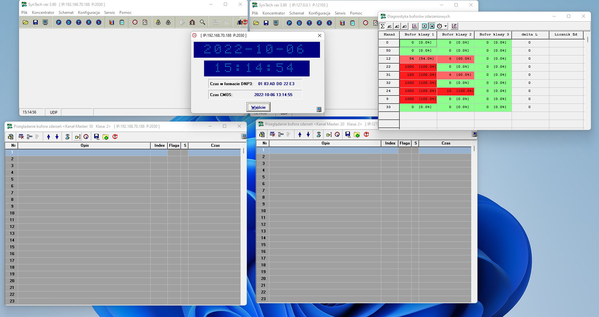
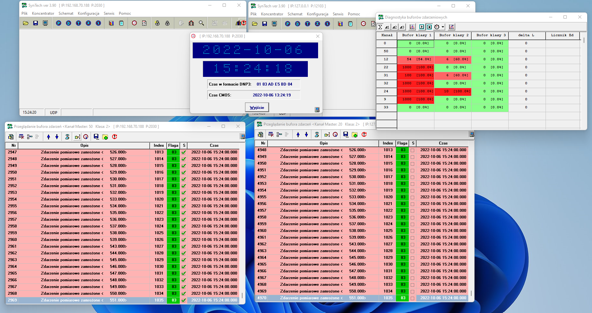

Report beta
Testy przeprowadzone kiedy bufor miał 10 000 indeksów. Konkluzja: zdarzenia spływały poprawnie.
Feedersy dodane przez Jarka Kłosa generują 497 zdarzeń na minutę. Poniżej dwa screenshoty przedstawiające 4970 indeksów, które pojawiły się w Syntechu(quasi-scadzie) po uruchomieniu wirtualnego koncentratora po 10 minutach (10*497=4970).
Poniżej zdjęcie sprzed uruchomienia liczenia zdarzeń w Syntech (vkonc koncentrator wyłączony)

Poniżej zdjęcie przedstawiające 4970 indeksów, które trafiły do Syntech po odczekaniu 10 minut i uruchomieniu vkonc

Testy przeprowadzone kiedy bufor miał 500 000 indeksów. Operowałem na plikach, które dostarczył mi kolega Jarek Kłos gdyż równocześnie logował się na urządzenie
Pliki dostarczone przez Jarka Kłosa i plik, w którym łącze je w jedną całość
Skrypt łączący wszystkkie pliki i nadający im prawidłowe indeksy.
Uwaga. Pobranie blisko pół miliona indeksów do przeglądarki jako paragrafy może chwilowo unieruchomić przeglądarkę